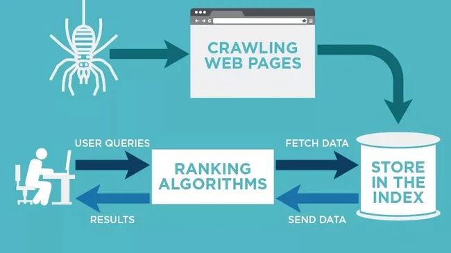

Web Crawling

Web crawling, also known as web scraping or spidering, is the process by which automated scripts or bots systematically browse the web to gather information and data from websites.
How Web Crawling Works
- Starting Point: Crawlers begin at a list of URLs known as seeds. These seeds are the initial entry points for the crawler.
- Fetching Pages: The crawler fetches the content of these pages. This process involves sending HTTP requests to the servers hosting the pages.
- Parsing Content: The fetched pages are parsed to extract useful information, such as hyperlinks, text content, and metadata.
- Following Links: The extracted hyperlinks are added to the list of URLs to be crawled, allowing the crawler to discover new pages.
- Storing Data: The gathered data is stored in a database or indexed for easy retrieval and analysis.
Key Components of a Web Crawler
- URL Frontier: A data structure that keeps track of URLs to be fetched and their priority.
- HTTP Fetcher: A module that handles the network requests to fetch the content of web pages.
- HTML Parser: A tool that parses the HTML content of fetched pages to extract relevant information and hyperlinks.
- Data Storage: A system for storing the fetched and parsed data for further processing and analysis.
Challenges in Web Crawling
- Scalability: Crawling the web involves fetching and processing vast amounts of data, requiring scalable infrastructure.
- Politeness: Crawlers must respect the policies set by websites, such as the robots.txt file, to avoid overloading servers.
- Duplicate Content: Identifying and handling duplicate content across different URLs is essential for accurate data collection.
- Dynamic Content: Crawling websites with dynamically generated content, such as JavaScript-heavy pages, poses additional challenges.
Applications of Web Crawling
- Search Engines: Web crawlers are fundamental to search engines like Google and Bing, enabling them to index and rank web pages.
- Market Research: Businesses use web crawling to gather data on competitors, market trends, and customer sentiment.
- Data Mining: Crawlers are used to collect large datasets from the web for analysis in various fields, such as academic research and machine learning.
- Content Aggregation: Crawlers aggregate content from multiple sources to create news portals, price comparison websites, and more.
Conclusion
Web crawling is a powerful technique for systematically gathering data from the web. It plays a crucial role in powering search engines, enabling data-driven decision-making, and providing valuable insights across various domains.